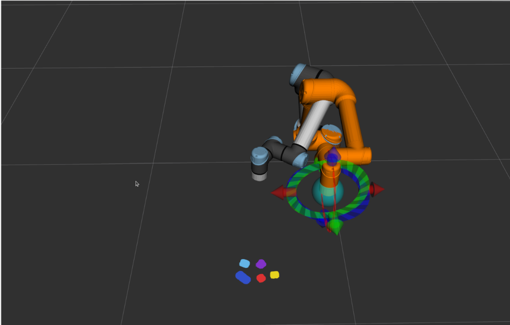

Implementation
Hardware
Describe your hardware setup. What robot, sensor, or custom device did you use? Explain any significant fabrication or integration work. Highlight design decisions and their rationale.


Describe any issues or roadblocks you encountered with your hardware and how you addressed them. For example, did you iterate on a design? Did you switch materials or components?
Module 1 — Interactive Website and Slicing
The website effectively functions as our project's user interface. Through the website, the user builds their lego set, and then just sends it to the robot which then builds their set brick for brick. To the user, everything else is a blackbox. To us, it's the beginning of a long series of steps to get the user's lego set into the real world. After the user clicks the "send to robot" button, the website slices the build, not dissimilar to how a slicing software would for a 3D print. The slicer looks at what the user's built, and orders each brick by how high above the build plate its studs will be. Then it orders them from left to right, back to front before sending it to the robot as a json file. The brick type, color, location, and orientation are all encoded in the json file too so the robot knows exactly which brick to pick up, in which order, and where to place it on the build plate.
While the website was a core portion of the functionality of our project, we didn't put as many hours into it compared to the other modules. The core purpose of this project was still to excercise and further our knowledge in ros2 and robotics engineering, so making the website as water-tight as possible wasn't high on our list of priorities. As such, once the website was capable of keeping track of and placing every type of brick available to us and correctly exporting an ordered list of bricks for the robot to read, we left it as it was. If you go poke around the website you might notice some... peculiar behaviour from some of the bricks, especially when you try to rotate some of the funkier shapes.
Module 2 — Brick Detection and Pose Estimation
Describe the second major software module. Explain the algorithm, any assumptions it relies on, and how you validated its outputs.



You may also want to describe any alternative approaches you considered and why you didn't pursue them (e.g. off-the-shelf models, different sensor modalities).
Explain any interesting challenges or obstacles, briefly describe what didn't work and why.
Module 3 — Path Planning and Inverse Kinematics
Describe the third major software module. How does it use the outputs of the previous modules? What ROS nodes, APIs, or frameworks does it rely on?
Explain any interesting challenges or obstacles, briefly describe what didn't work and why.
System state diagram
With each module developed, the end-to-end pipeline works as follows:
- Step 1 — Receive New Build: Describe the final stage that closes the loop and produces observable behavior.
- Step 2 — Plan Build Order: Describe the final stage that closes the loop and produces observable behavior.
- Step 3 — Scan Aruco Tag: Describe what happens in the first stage of your pipeline and what it produces as output.
- Step 4 — Scan For Next Brick: Describe what happens in the second stage and how it uses the output of step 1.
- Step 5 — Pickup Brick: Describe what happens in the third stage.
- Step 6 — Place Brick onto build plate: Describe the final stage that closes the loop and produces observable behavior.
- Step 7 — Go back to Scan for Next Brick: Describe the final stage that closes the loop and produces observable behavior.